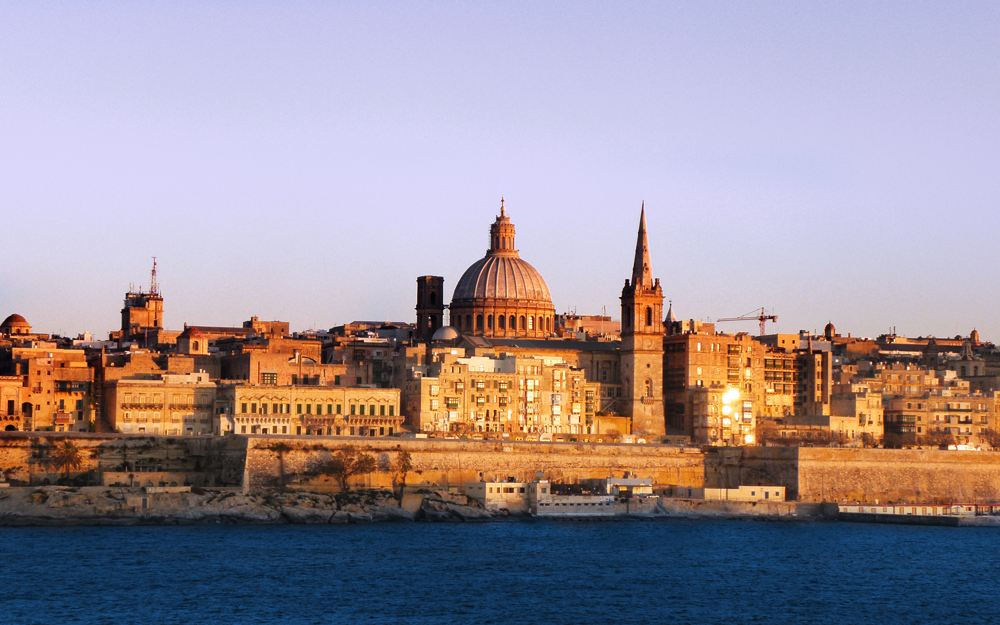
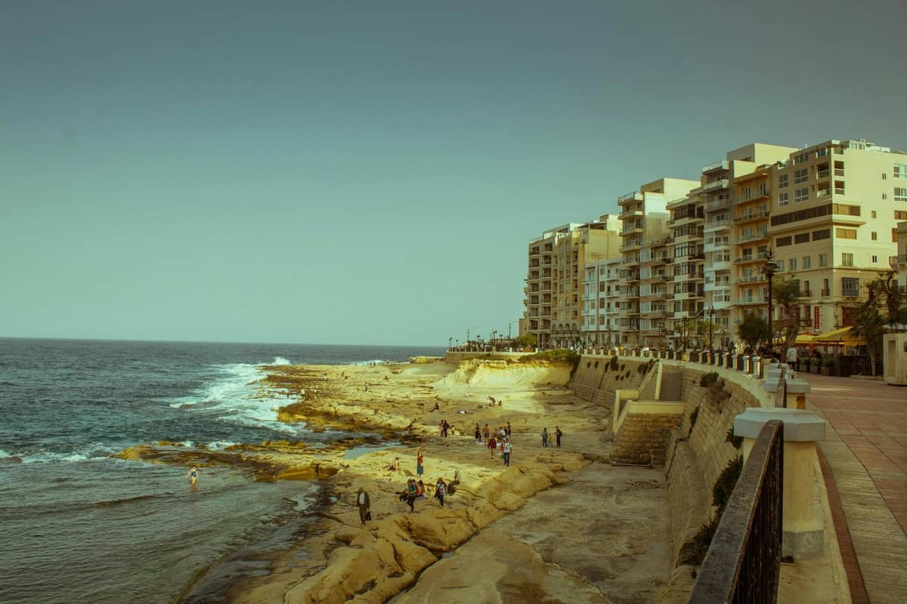
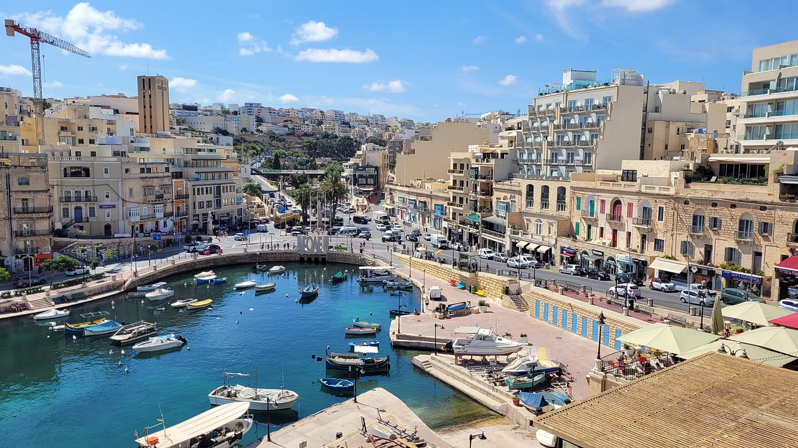
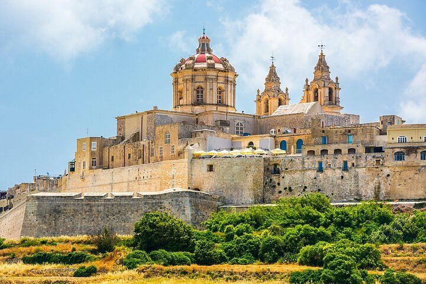

Está pensando em morar em Malta? Descubra tudo o que você precisa saber antes de embarcar.
Responder o formulárioMalta é um país que fica localizado no mar Mediterrâneo, logo abaixo da Itália. Ele é formado por 3 ilhas: Ilha de Malta, Comino e Gozo.
Escolha uma fase para ver o que fazer em cada momento.
Quanto antes você organiza a base, menos imprevisto na chegada.
Os primeiros dias são para resolver o básico e conhecer a região onde você vai morar.
Com o tempo, a cidade vira casa. Organize a rotina e crie sua rede de contatos.
Informe quantos dias pretende ficar e em quantos meses vai viajar.
Usa valores de referência por dia para moradia, alimentação e transporte. São estimativas, não preços fixos.
Escolha uma cidade para ver como ela é.

A capital de Malta, com centro histórico.

Região moderna à beira-mar com muitas lojas e cafés.

O ponto mais agitado da ilha, cheio de estudantes.

A cidade murada que já foi a antiga capital de Malta.
Responda 4 perguntas rápidas.
Veja o que outras pessoas que querem morar em Malta estão escolhendo e planejando.